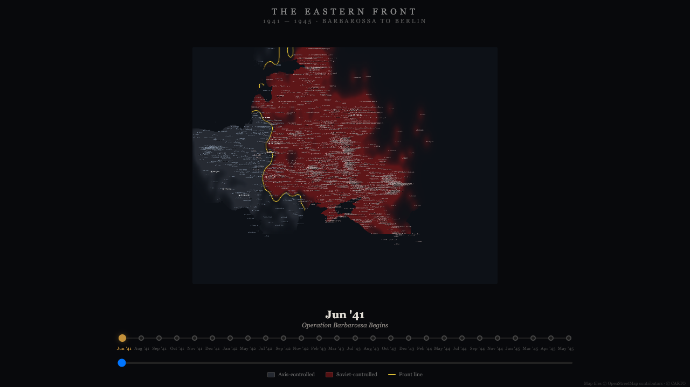
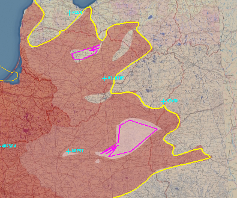
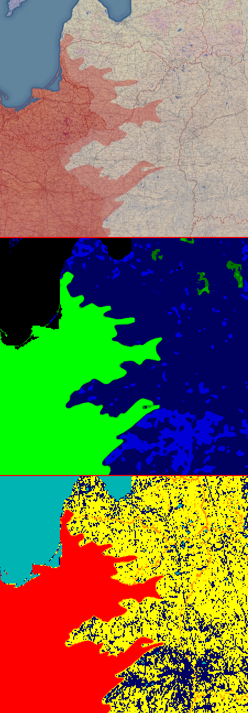

How we modeled the Eastern Front as a physics problem
and built an interactive simulation from 10,000 historical events

The simulation at June 1941—Operation Barbarossa begins. Red glow: Axis-controlled territory. The yellow contour is the zero crossing of the density field.
The interactive version loops through 26 keyframe dates from June 1941 to May 1945. Arrow keys to step manually.
Open fullscreen →
Part One · Feb 6–10
Building the Simulation
Act I
The Equation
The Eastern Front of World War II stretched from the Arctic to the Black Sea. Miguel wanted to build an interactive map that showed the front line's movement—not as hand-drawn frames, but as a physics simulation. Every city is a point source in a continuous scalar field. Axis cities push positive, Soviet cities push negative. The front line is the zero crossing:
field(lat, lon) = Σ (sign × w) / (1 + dist²)³
Cubed Cauchy kernel. No special cases. Pockets, salients, encirclements—all emerge from this one line.
Act II
The First Events
On February 6, the first commit landed: the initial dataset, the density field math, and the renderer. The data is event-sourced—every change to the map is an atomic record: a date, a city, a control state, and a bag of labels. The state at any date is computed by replaying all events up to that point.
// The first event: Barbarossa, June 22, 1941
["1941-06-22", "konigsberg", "axis", {
"operation": "barbarossa",
"note": "East Prussian staging area for AG Centre and North",
"unit_army_group": "ag_centre",
"unit_army": "9th_army",
"commander": "bock",
"attrition": 0
}]
Labels serve two purposes. Penalty labels—supply_disruption, attrition, air_superiority—reduce a city's weight. They compound: supply_disruption: 0.5 and attrition: 0.3 gives 35% effective weight. Metadata labels—operations, commanders, notes—make the dataset self-documenting without touching the math.
Within hours on that first day, the dataset was enriched with unit-level tracking: divisions, corps, army groups, commanders. By evening, 99.8% of events had structured labels. The data was already more than a simulation input—it was becoming a labeled historical dataset.
Act III
Campaigns and Agents
The events were partitioned across campaign directories, each maintained by a dedicated Claude agent. Multiple agents could work simultaneously without conflicts because events were partitioned by directory and the merge tool combined files alphabetically:
Each file carries a metadata block recording the author and reasoning. The numbered filenames tell the story of iterative refinement—the Uranus directory grew from a single 001-encirclement.json to 38 files as the Stalingrad pocket events were refined.
A resource conservation principle prevented the most dangerous failure mode of multi-agent data entry: inflation. Inspired by physics simulations that conserve mass and by Rust's ownership model, every resource had to be traceable to an explicit event. Compare early events with later ones—the evolution is visible:
// Early (Feb 6): magic number
["1941-10-03", "orel", "axis", {"strength": 5}]
// Later (Feb 10): decomposed, traceable
["1942-11-23", "stalingrad", "soviet", {
"operation": "uranus",
"strength": 5,
"ammunition_supply": 0.05,
"food_supply": 0.05,
"fuel_supply": 0.15,
"unit_army": "6th_army",
"commander": "manstein",
"note": "Pocket: ~290,000 troops. Ammo for 2 weeks,
food 6-day reserve, fuel critically low."
}]
Act IV
16,975 Failures
The test is one concept: for every event in the dataset, does the field sign match the declared control? If an event says Orel is Axis, the field at Orel must be positive. A failure looks like:
✗ 1941-10-03 Orel label=axis (+) field=-5.02
By February 9, as the dataset grew, so did the failures. With 10,000+ events across 1,597 cities and 1,067 dates, there were 16,975 sign mismatches. The fix is never to change the math—it's always to add more events or tune strengths so the cumulative field shifts.
Manual fixes brought it down by hundreds at a time—122, then 319, then 317. But the pace was too slow. On February 10, a Rust optimizer with GPU acceleration was built. It searched for optimal city strengths to minimize failures across the entire timeline. The first run cut 2,264 failures (16,975 → 14,711). A second batch cut 898 more. By February 14, the engine was replaced with adaptive resolution—per-city kernel exponents that let dense front-line areas resolve correctly without disturbing the smooth visual rendering elsewhere.
Not every failure was solvable. The project's memory file contains a section titled "Intractable Failures (Don't Waste Time)":
- Deep Don bend cities (Frolovo -23, Ilovlya -35):
massive Soviet rear influence
- Volga east bank Soviet cities near Stalingrad:
overwhelmed by Axis field from opposite bank
- Morozovsk: too deep in Soviet zone
A cubed Cauchy kernel with an 8-degree cutoff makes certain geographic configurations unreachable. The Don bend is a deep potential well. No local perturbation can overcome the regional gradient. The memory file's advice—don't waste time—is itself knowledge. A model that is honest about its limits earns more trust than one that hides them.
Act V
The Read Side
On February 7, the CQRS architecture arrived. Computing the density field across a grid for 1,067 dates is expensive in JavaScript. The solution: a Rust binary that pre-computes everything and writes it to a SQLite database.
240 event files → merge → eastern-front.json (6 MB)
↓
Rust readside-builder (GPU: Metal)
↓
eastern-front.db (SQLite, 141 MB)
• field grids at 2 resolutions
• marching-squares contours
• city states per date
• 1,067 dates in 5 seconds
The UI loads pre-computed tiles from SQLite—zero field computation at render time. The static version on this blog goes further still: Puppeteer captures screenshots of the real UI at each keyframe, so the blog serves pre-rendered PNGs with zero JavaScript.
The simulation is arithmetic. The understanding is in the labels.
Part Two · Feb 14–17
Seeing the Truth
The reference: a timelapse of the Eastern Front from a historical cartography video, showing Axis (red) and Soviet (beige) territory. Until now, we had no way to compare our simulation against it systematically.
Act VI
Geometry Overlays
On February 14, a new problem surfaced. We had the simulation from Part One, and now we had the reference timelapse. Comparing them revealed a structural mismatch: the density field produces smooth, rounded contours, but real front lines have sharp features—panzer breakthrough fingers, encirclement corridors, narrow salients. The cubed Cauchy kernel can't produce a thin finger from point sources alone.
The solution was geometry overlays: corridors, pockets, salients, and bridgeheads defined as GeoJSON shapes that mask the density field grid in post-processing. These are not events—they are geometric primitives (polygons, polylines) that directly override regions of the computed field. Four panzer group breakthrough corridors were added for Barbarossa. Soviet resistance salients created the wavy, irregular front line visible in the reference.

Geometry overlays visualized on the reference frame. Magenta and cyan shapes are corridor and salient polygons that override the density field grid. The yellow contour is the resulting front line.
Act VII
The Comparison Pipeline
Also on February 14, the first tools for comparing the simulation against the reference timelapse were built. This required solving a non-trivial alignment problem: the reference video uses a different map projection, different extent, different resolution. An 8-point geographic calibration with affine transforms aligned the two coordinate systems.
By February 15, a live-compute comparison mode was working. The rendering pipeline could produce side-by-side composites: our field grid next to the reference frame, with the simulation's front line (yellow contour) overlaid on both. For the first time, we could see exactly where the simulation agreed with history and where it diverged.
June 22, 1941—three-panel validation. Left: reference timelapse frame. Center: simulation with front line overlay. Right: density field classification.
July 1941 — Barbarossa drives east. The yellow contour tracks the reference.September 1941 — Kiev falls. Leningrad besieged.December 1941 — Deepest advance. Winter halts the push.
Act VIII
Extracting the Front Line
Visual comparison was a start, but subjective. The next step was extracting the actual front-line geometry from the reference video frames—turning pixels into comparable coordinates. This has nothing to do with events or the density field. It is pure computer vision applied to cartography: color analysis on raster images. The pipeline works in stages:
Stage 0: Reference frame. Red-tinted region is Axis territory.Stage 1: Red-excess field separates Axis (red) from Soviet (blue).Stage 6: Classified after sigmoid, median filter, island removal, erosion.
Red-excess isolates Axis territory. A sigmoid normalizes the signal. A median filter kills noise. Island removal eliminates small disconnected regions. Erosion tightens boundaries. Finally, contour tracing extracts the front line as a polyline—geometry derived entirely from pixel colors, with no knowledge of events or cities.

Border zone analysis: the reference frame (top), classified field (middle), and red-excess signal with extracted contour (bottom). Each stage is purely pixel-derived.
The pipeline ran on all 60 frames of the reference timelapse, producing 60 extracted front lines and comparison composites. Each showed precisely where the simulation's contour diverged from the reference's contour. Feedback was recorded per date:
# reference/comparison/1941/07/04/feedback.md
Status: Significantly Improved
(panzer breakthrough fingers now visible)
Corridors Added:
1. Hoth's 3rd Panzer Group (AG Center North)
Route: Suwalki → Vilnius → Borisov → Vitebsk
2. Guderian's 2nd Panzer Group (AG Center South)
Route: Brest → Baranovichi → Bobruisk
December 18, 1941. The verification view: no styling, just the raw contour on a geographic grid. Red dots are calibration cities. Pink regions are pockets.
October 5, 1941—peak Axis advance. The simulation contour (yellow) closely tracks the reference contour (extracted from the video frame via CV).
Two contours, two origins.
One from 10,804 events. One from 60 video frames.
Where they agree, the simulation is truthful.